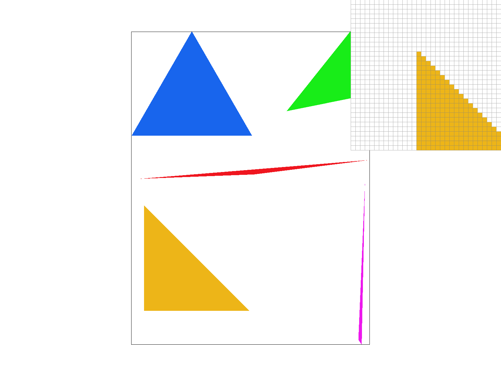
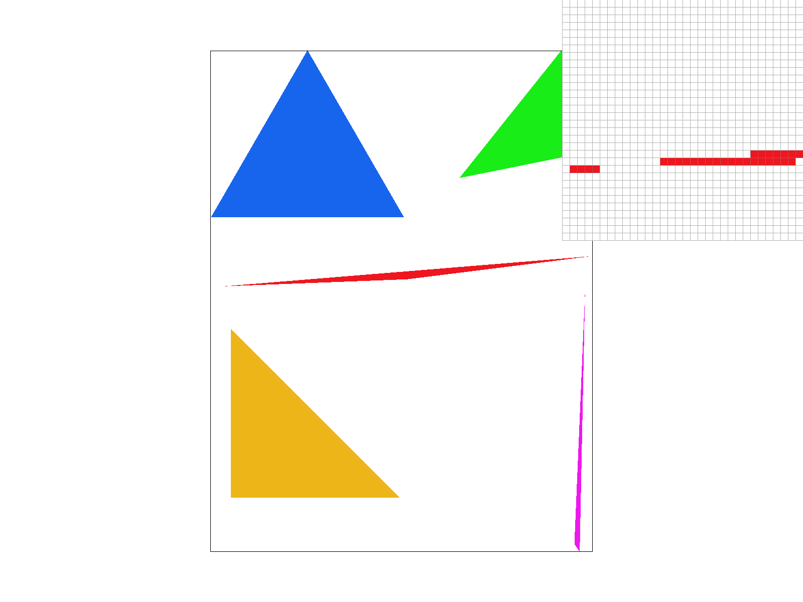
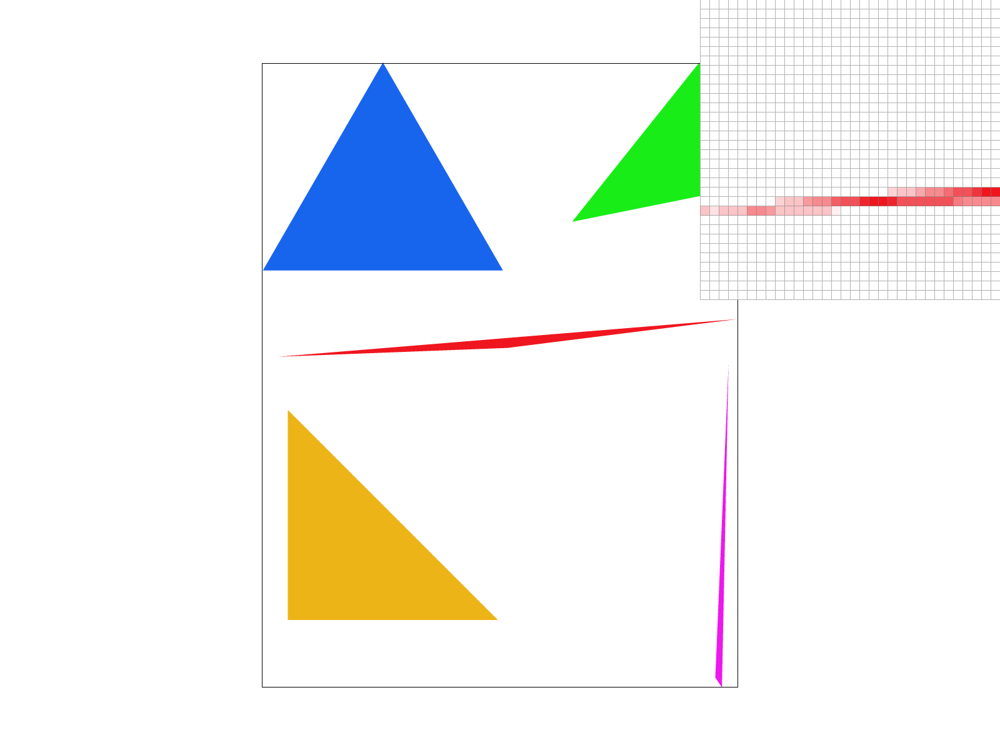
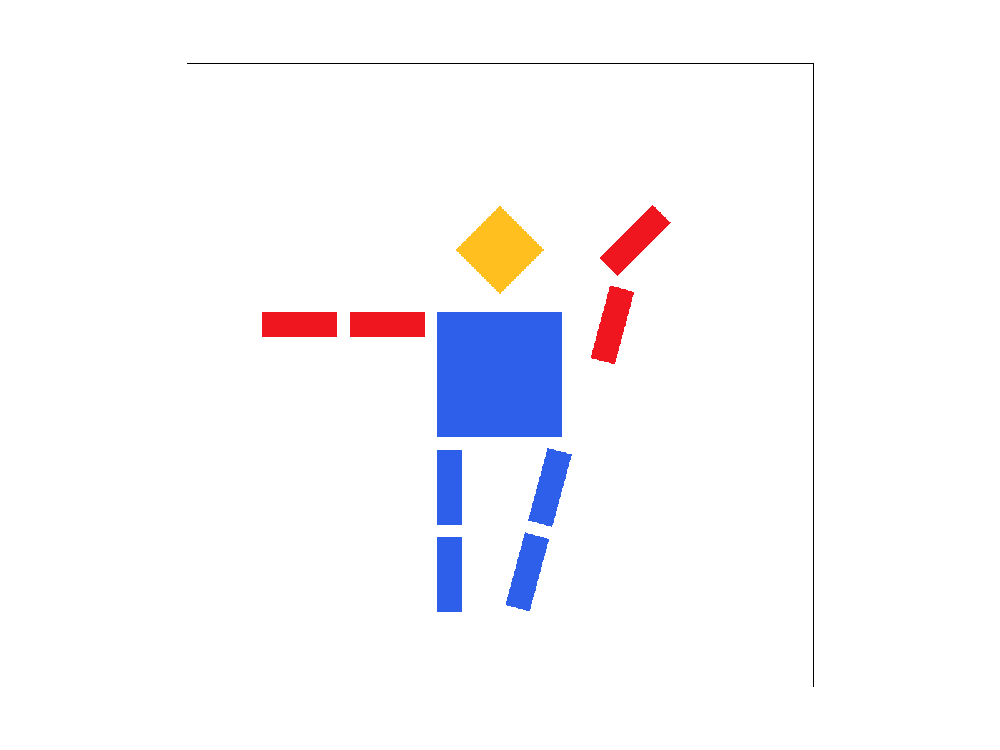
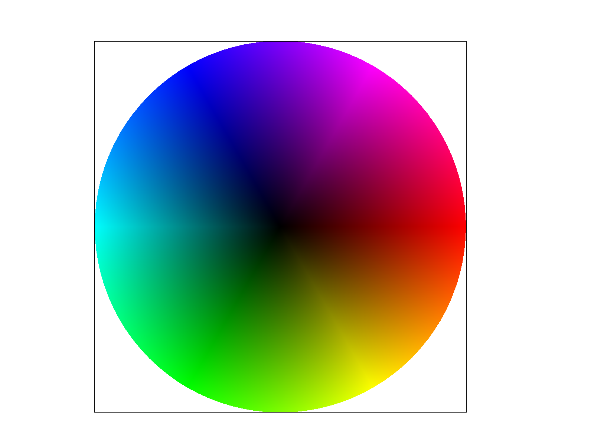
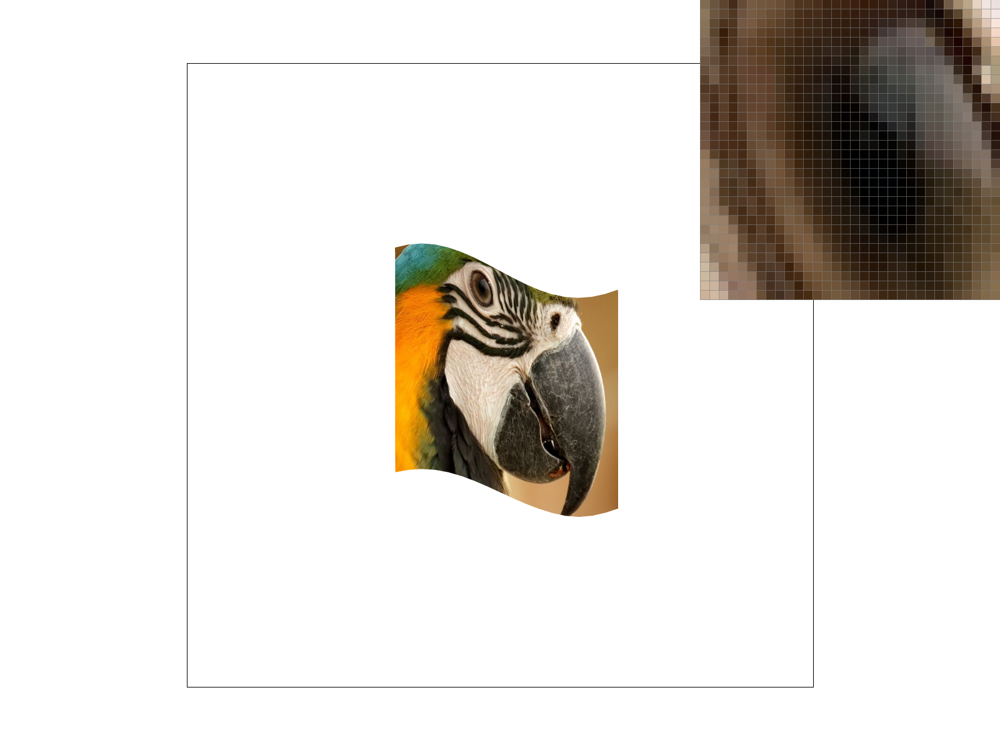
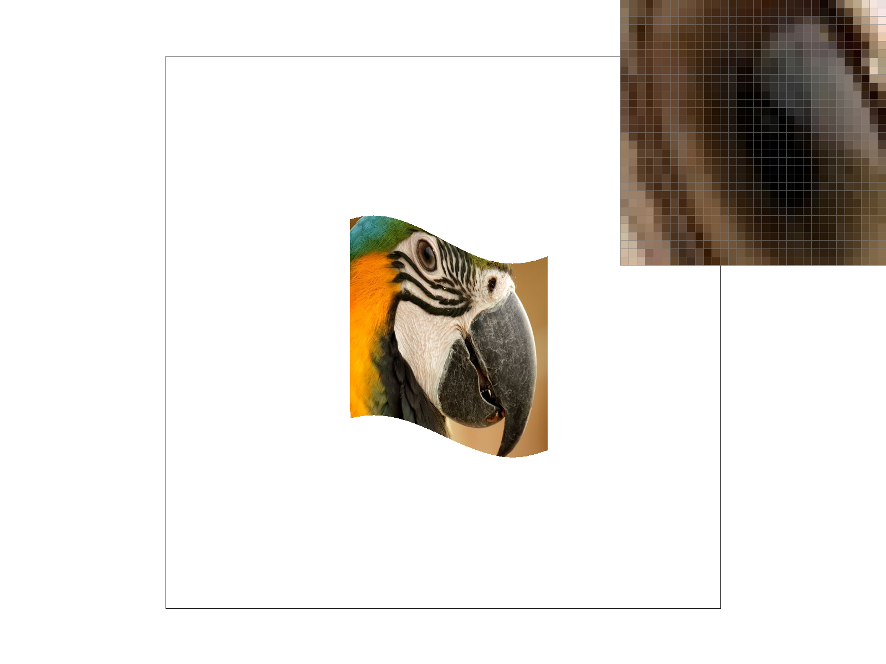
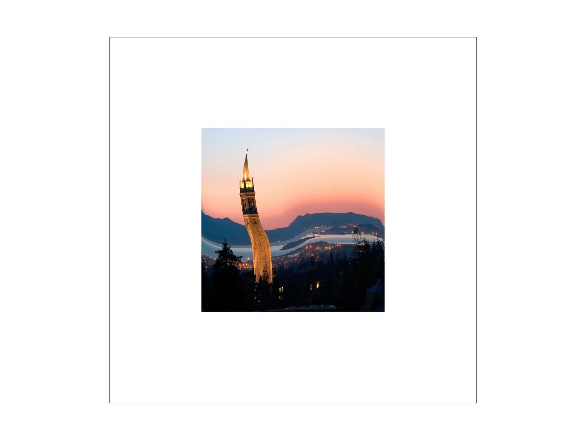
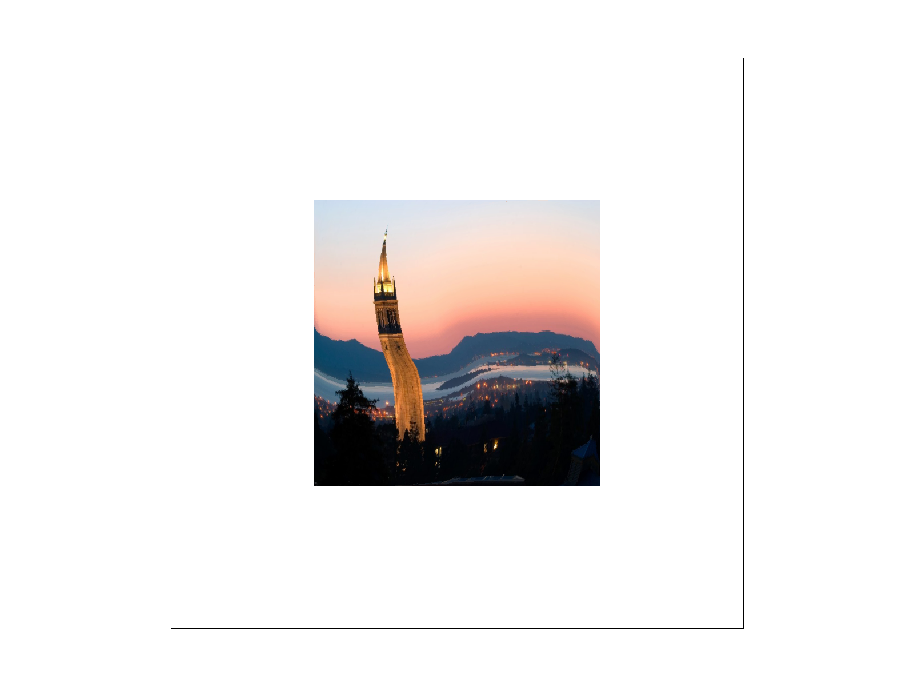
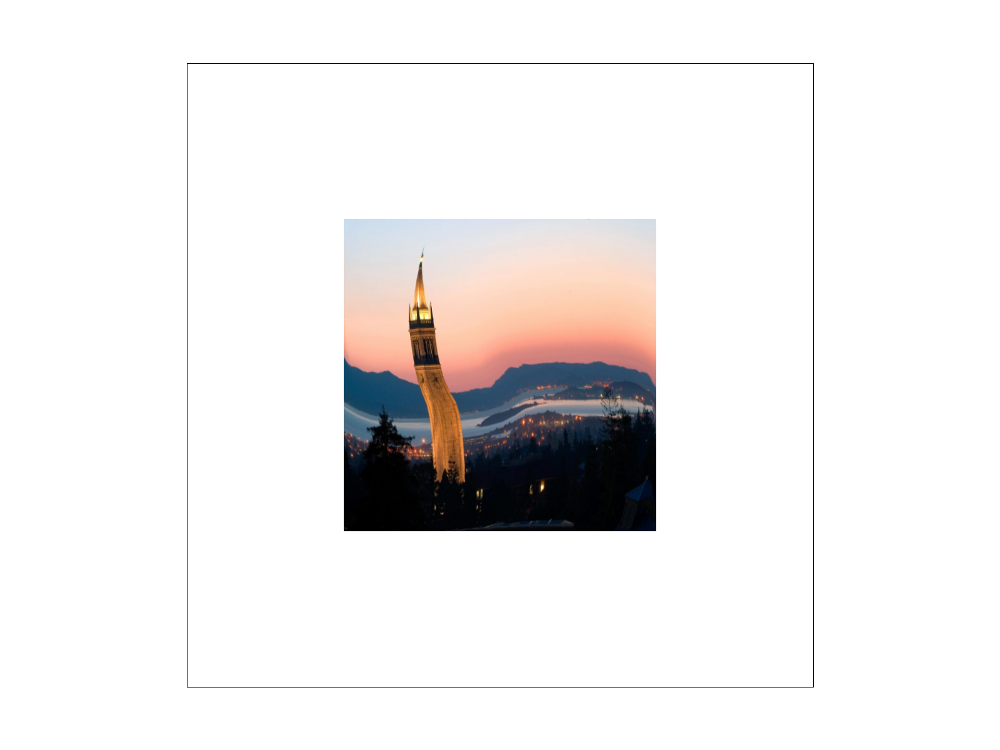

In this homework we built a software rasterizer that turns vector (SVG) descriptions of 2D geometry into pixels. We started from the most basic primitive — filling a single-color triangle by testing point-in-triangle coverage inside a bounding box — and progressively layered on the machinery that a real rendering pipeline needs: supersampling for antialiasing, hierarchical transforms for composing shapes, barycentric coordinates for interpolating per-vertex attributes, and finally texture mapping with both pixel-level filtering (nearest / bilinear) and level-of-detail filtering via mipmaps (trilinear).
The recurring theme of the assignment is sampling and antialiasing: rendering is fundamentally the problem of reconstructing a continuous signal (the ideal image) onto a discrete grid of pixels, and everything from supersampling to mipmapping is a strategy for reducing the aliasing that results from sampling a signal below its Nyquist rate. The most interesting takeaway for us was seeing how the same underlying idea — averaging more information per pixel, whether in screen space (supersampling) or in texture space (mipmaps) — shows up again and again, and how each strategy trades off speed, memory, and antialiasing quality differently.
How we rasterize a triangle. Given the three screen-space vertices, we first compute the signed area of the triangle, \( \text{area} = (x_2-x_0)(y_1-y_0) - (y_2-y_0)(x_1-x_0) \). If the area is zero the triangle is degenerate and we return immediately; if it is negative the vertices are in clockwise order, so we swap two of them so that the winding is always consistent. This lets us use a single sign convention for the inside test.
We then compute the triangle's bounding box — the smallest axis-aligned rectangle that
contains all three vertices — by taking the min/max of the x and y coordinates, flooring/ceiling
to pixel boundaries, and clamping to the screen (\([0, \text{width}-1] \times [0, \text{height}-1]\))
so we never test off-screen pixels. We build three Edge objects, one per triangle side.
Each edge stores a point and a direction and evaluates the implicit line (half-plane) function
which returns a value whose sign tells us which side of the edge the point lies on. We iterate over
every pixel in the bounding box, evaluate the three edge functions at the pixel center
\((x+0.5, y+0.5)\), and color the pixel if it lies on the inside (non-negative) side of all three
edges simultaneously. To keep tie-handling consistent we canonicalize each edge's orientation in
make_edge (always ordering the endpoints and flipping a stored sign), which
avoids double-drawing or gaps along shared edges of adjacent triangles.
Why this is no worse than the naive bounding-box approach. The reference "naive" algorithm
checks every sample inside the bounding box and, for each, tests whether it is inside the triangle.
Our algorithm is exactly a bounding-box algorithm: we only ever visit samples inside the same
clamped bounding box, and for each sample we do a constant amount of work — three edge-function
evaluations, each a couple of multiplies and adds. We do not test any samples outside the bounding
box, and we precompute the edge coefficients once per triangle (in make_edge) rather
than recomputing them per sample. So our total cost is \(O(\text{bounding-box area})\) edge tests,
identical in asymptotic complexity to the naive scan and never doing more work than it.

basic/test4.svg at default viewing parameters with the pixel inspector centered
on an interesting part of the scene (a triangle edge, where the jaggies of single-sample
coverage are visible).
Extra credit (optimizations): Beyond a straightforward clamped bounding-box scan with precomputed edge coefficients, we did not implement additional optimizations (e.g. incremental edge evaluation across a scanline, tiled/hierarchical traversal, or SIMD), so no timing table is included.
Algorithm and data structures. Supersampling reduces aliasing by taking more than one sample
per pixel and averaging the results. Our core data structure is a sample_buffer of size
\(\text{width} \times \text{height} \times \text{sample\_rate}\): instead of storing one color per
pixel, we store sample_rate colors per pixel. For a sample rate \(N\) we treat the pixel
as an \(\sqrt{N} \times \sqrt{N}\) grid (sqrt_rate = round(sqrt(sample_rate))) and place
one sample at the center of each sub-cell, at offsets \(\big(\frac{s_x + 0.5}{\sqrt N},
\frac{s_y + 0.5}{\sqrt N}\big)\) within the pixel.
Modifications to the pipeline. Three changes were needed:
set_sample_rate reallocates the sample buffer to the new
\(\text{width}\cdot\text{height}\cdot\text{sample\_rate}\) size whenever the rate changes.
resolve_to_framebuffer is the new "downsampling" step: after all primitives are drawn,
it averages the \(N\) sub-sample colors of each pixel (a box filter) and writes the averaged,
clamped color into the final RGB framebuffer.
Why supersampling antialiases. A single sample per pixel makes a hard, binary decision about whether the whole pixel is inside or outside the triangle, which produces stair-stepped ("jaggy") edges. By taking many sub-samples and averaging, a pixel that is only partially covered by the triangle gets a color that is a blend of the triangle color and the background in proportion to its coverage. This approximates the true area coverage of the pixel, so edges become smooth gradients instead of hard steps.
|
 |
|
 |
Why these results are observed. All three images show basic/test4.svg at default
parameters with the pixel inspector over a very skinny triangle corner. At sample rate 1 the thin
corner breaks up into isolated, fully-on or fully-off pixels — where the triangle is narrower
than a pixel it either grabs the whole pixel or misses it entirely, so the tip looks broken and
aliased. As the sample rate increases to 4 and then 16, the partially-covered pixels along the corner
take on intermediate shades proportional to how much of each pixel the sliver actually covers, so the
corner becomes a smooth, continuous taper. More sub-samples means a finer estimate of coverage and
therefore smoother antialiasing, at the cost of more computation and memory.
Extra credit (alternative antialiasing): We used grid-based (uniform) supersampling only, so there are no alternative-method comparisons to report.
SVG groups (<g>) apply transforms hierarchically: each group's transform is
composed with its parent's, so children inherit and accumulate the transformations above them in the
tree. For my_robot.svg we made cubeman wave hello. Starting from the provided
robot.svg, we wrapped the entire right-arm group in a rotate(-75) about the
shoulder joint so the upper arm swings up and out, then added a further rotate(30) at the
elbow so the forearm cocks to the side — the classic "waving hand" silhouette. To add a little
life we also gave the right leg a small rotate(15) as if he is mid-step, recolored the
torso and legs blue, and turned the head yellow while keeping the arms red for contrast. Each of these
effects is achieved purely by inserting nested <g transform="..."> elements
(translate/rotate/scale) around the existing polygon definitions, relying on the hierarchical
composition of transforms so that rotating a parent group rotates the whole limb rigidly.

my_robot.svg: cubeman waving, with a raised, bent right arm and a stepping leg.Barycentric coordinates express any point inside a triangle as a weighted average of the triangle's three vertices. For vertices \(V_0, V_1, V_2\) and weights \(\alpha, \beta, \gamma\) with \(\alpha + \beta + \gamma = 1\), the point is \(P = \alpha V_0 + \beta V_1 + \gamma V_2\). Intuitively each weight measures "how much" of the corresponding vertex the point is: \(\alpha = 1\) at \(V_0\) and falls linearly to \(0\) along the opposite edge, and similarly for \(\beta\) and \(\gamma\). Equivalently, each weight is the ratio of the sub-triangle area opposite that vertex to the total area. Because they sum to one and vary linearly across the triangle, barycentric coordinates are the natural way to interpolate any per-vertex attribute — here, color.
We compute them with the standard formula using a shared denominator \( d = (y_1-y_2)(x_0-x_2) + (x_2-x_1)(y_0-y_2) \):
\[ \alpha = \frac{(y_1-y_2)(p_x-x_2) + (x_2-x_1)(p_y-y_2)}{d}, \quad \beta = \frac{(y_2-y_0)(p_x-x_2) + (x_0-x_2)(p_y-y_2)}{d}, \quad \gamma = 1 - \alpha - \beta \]At each covered sample we then blend the vertex colors as \( C = \alpha C_0 + \beta C_1 + \gamma C_2 \). If the three vertices are pure red, green, and blue, this produces a smoothly blended color triangle: near each vertex the color is dominated by that vertex's hue, and it transitions continuously across the interior.

svg/basic/test7.svg at default viewing parameters, sample rate 1 — smoothly interpolated colors via barycentric coordinates.
Pixel sampling is the step that, for each screen sample covered by a textured triangle, decides
which texture color (texel) to use. We implemented it in rasterize_textured_triangle:
for every covered sub-sample we use the same barycentric coordinates as in Task 4, but this time we
interpolate the per-vertex texture coordinates \((u, v)\) instead of colors. We then hand that
\((u,v)\) — packaged in a SampleParams struct along with the \((u,v)\) of the
neighboring screen pixels (used later for level sampling) — to the texture's sampling routine,
which returns a color.
Nearest vs. bilinear. These are two ways to turn a continuous \((u,v)\) into a color:
sample_nearest): round \((u,v)\) to the single closest texel and return
its color. Fast, but blocky — adjacent screen pixels can snap to the same texel or jump
abruptly to the next one.
sample_bilinear): take the four texels surrounding \((u,v)\) and
linearly interpolate them using the fractional offsets \(s, t\) — first two horizontal lerps
between the left/right texels, then one vertical lerp between those results. This produces a smooth
blend rather than a hard jump.
|
|
 |
|
 |
|
Relative differences. Bilinear sampling is noticeably smoother than nearest, especially at 1 sample per pixel where nearest shows hard blocky edges and stair-steps along high-contrast texture features while bilinear blends them. Increasing the sample rate to 16 improves both, but the two techniques address different problems: supersampling fixes edge/coverage aliasing, while the pixel-sampling method fixes texture magnification aliasing. The difference between nearest and bilinear is largest when the texture is magnified (a texel spans many screen pixels) or contains high-frequency, high-contrast detail: there, nearest produces obvious blocks and abrupt jumps, whereas bilinear smooths across the four nearest texels. When the texture is roughly at 1:1 scale (one texel per pixel) the two methods look nearly identical.
Level sampling chooses which mipmap level to read from, to combat texture
minification aliasing (when a single screen pixel covers many texels). A mipmap is a pyramid of
pre-filtered, successively half-sized copies of the texture; reading from a coarser level is
equivalent to averaging many texels at once, which is exactly what an undersampled pixel needs. To
pick the level we estimate how fast texture coordinates change per screen pixel: in
get_level we take the \((u,v)\) differences to the neighboring screen pixels in x and y,
scale them by the texture dimensions to get the footprint in texels, and compute
We then support three level-sampling modes: L_ZERO always samples the full-resolution
level 0; L_NEAREST rounds \(L\) to the nearest integer level; and L_LINEAR
samples the two bracketing levels and linearly blends them by the fractional part of \(L\)
(trilinear filtering when combined with bilinear pixel sampling). Each level is itself sampled with
the chosen pixel method (nearest or bilinear).
Tradeoffs (speed / memory / antialiasing).
L_LINEAR costs about twice L_NEAREST
(two level lookups) but removes the visible "seams" where the level switches.
In short: supersampling buys antialiasing power with time and memory; mipmaps buy cheap minification antialiasing with a fixed memory overhead; bilinear buys magnification smoothness for a small, constant cost.
|
|
 |
|
 |
 |
The four combinations above use our own PNG (wired into a copy of one of the svg/texmap/
files). Moving from L_ZERO to L_NEAREST removes the shimmering/aliasing in minified (far-away or
steeply-angled) regions by pulling from coarser, pre-averaged mip levels, while moving from P_NEAREST
to P_LINEAR smooths the blockiness within whichever level is sampled.
Extra credit (extra filtering methods): We did not implement additional filtering methods (e.g. anisotropic filtering), so there are no further comparisons to report.